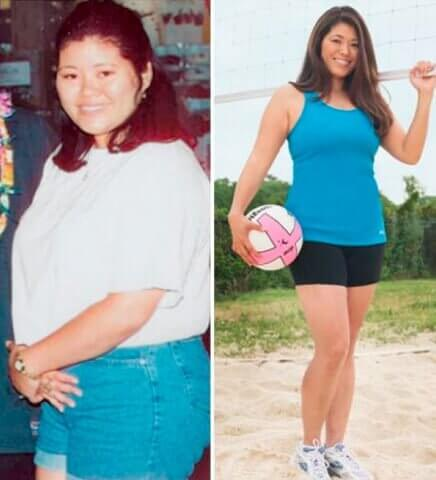
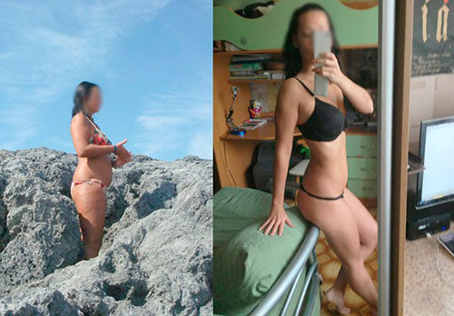
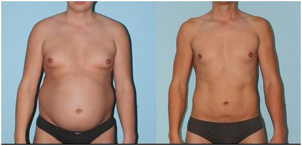

MINISTERO DELLA SALUTE: FARMACI INNOVATIVI PER LA PERDITA DI PESO - MENO 15 KG IN 4 SETTIMANE SENZA PRODOTTI CHIMICI, LA FAME E L'ESERCIZIO FISICO
Descrive, il dottore della più alta categoria medica Souta Leonid Alexandrovich.
Diete, esercizi fisici, pillole e liposuzione sono oggi i principali metodi di lotta all'obesità, tuttavia, a giudicare dal fatto che il numero di persone complete continua a crescere, nessuno di loro è davvero massiccio ed efficace.
Tutto è cambiato quando è apparso Elier Slim, uno strumento che stimola la naturale perdita di peso.
Souta Leonid Alexandrovich
Direttore del "Centro medico scientifico nazionale" della RSE, dottore in scienze mediche, scienziato onorato della Federazione russa, terapeuta, nutrizionista
Esperienza lavorativa - 32 anni
Cosa sono le gocce Elier Slim?
Innovazione: Elier Slim. Ognuno con il proprio set unico di ingredienti. Di passaggio dirò che in entrambe le parti vengono utilizzati solo componenti naturali.
Elier Slim è stata testata clinicamente per stimolare il metabolismo. Ripristino del sistema endocrino Stimola la produzione di tessuto e riduce l'appetito Questo prodotto è al 100% organico e può stimolare il processo di funzionamento del corpo umano. Questo non richiede la fame a causa di processi metabolici che funzionano bene e bruciano grassi. Mangiare una dieta equilibrata può fornire risultati sufficienti per mantenere un metabolismo sano. Non sono richiesti anche esercizi pesanti. Basta esercitare con uno stretching regolare è sufficiente.
Principali caratteristiche di Elier Slim:
- Bruciagrassi
- Riduce l'appetito
- Ripristina il sistema armonico e il sistema endocrino allo stato normale
- Migliora la forma del corpo, bruciando i depositi in eccesso e l'eccesso di peso
A causa dell'accelerazione del metabolismo. Il grasso sotto la pelle nelle zone problematiche del corpo con Elier Slim andrà ad un tasso di 0,5 kg al giorno! Ditonics è molto efficace. Anche nei casi in cui l'eccesso di peso è causato da disturbi ormonali. Se hai una tendenza all'obesità. Questo prodotto è la risposta di cui hai bisogno!
Elier Slim è diventato disponibile recentemente in Italia. È stato dimostrato che questa è una scelta molto popolare tra i bodybuilder e gli allenatori. Questo aiuta a perdere peso più velocemente ea mantenere il peso normale nel corpo.
I risultati dopo 30 giorni di utilizzo Elier Slim

Risultati dopo l'utilizzo di Elier Slim per 15 giorni
Risultati dopo Elier Slim per 22 giorni
Risultati dopo l'utilizzo di Elier Slim per 18 giorni
Commenti del ricercatore:
Dottor Antonio Burneto
l dottore è uno dei più dietologi esperti
l'esperienza di 42 anni.
"La cosa più importante nella perdita di peso non è la distruzione del tuo sistema corpo, ma il controllo del peso! Non possiamo controllare il cibo in qualsiasi momento. Inoltre, per molte persone, il controllo della dieta è piuttosto difficile (per molte persone è difficile mantenere una dieta). Non vedo risultati raggiunti solo dalle compresse. Ma questi farmaci semplicemente spingeranno il sistema alla combustione del grasso attivo e alla perdita di peso. La perdita di peso dovrebbe essere naturale e non danneggiare il corpo. La Elier Slim è un rimedio naturale che non causerà disturbi nel corpo, ma stimolerà la perdita di peso in un breve periodo. L'integratore alimentare Elier Slim accelera il metabolismo e il metabolismo dei grassi. Sono sicuro che questa formula è la migliore nella moderna scienza della nutrizione e della dietologia. Questo è un prodotto certificato e può essere considerato affidabile dal produttore."
Dottor Wwan Wipa Eamon Pattaripiboon
18 anni, nutrizionista professionista
"Ho visto molte donne che hanno problemi. Provano tutto senza ottenere risultati. O tornare allo stesso peso di quello appena ridotto. Consiglio sempre di provare e riprovare. Ma ora consiglio la migliore alternativa a Elier Slim, che può essere utilizzata come supplemento. Aiuta a perdere peso a 15 kg, ovviamente, in un mese. Questa è una ricetta organica. Tutti sono disponibili Non importa quanti anni hai. La perdita di peso è associata alla combustione dei grassi. Non dalla guida fuori dal corpo. I risultati nell'area problematica possono essere visualizzati in una sola settimana. La Elier Slim è stata usata per un po 'nella nutrizione americana. E molto popolare in Tailandia. Consiglio a tutti di usarlo. E nessuno ha problemi con questo."
È stato studiato il supporto del Dipartimento di salute internazionale. I risultati raggiunti hanno superato tutte le aspettative:
ESAME MEDICO INTERNAZIONALE: come riduci il peso?
23%
47%
8%
17%
5%
Importante! Rapporti aggiuntivi L'inverno è il momento migliore per iniziare a perdere peso. Più bassa è la temperatura, maggiore è il metabolismo e la circolazione del sangue, maggiore è il livello di sangue e ossigeno, maggiore è l'effetto del trattamento. Il peso in eccesso è ridotto del 47% rispetto al più alto intervallo di temperatura. Il sistema funziona al 100% durante la fase di trattamento.
Studio
Elier Slim è il risultato di test di laboratorio. Istituto di ricerca del Dipartimento di salute internazionale:
Uno studio pianificato sul sovrappeso (100 persone), che ha utilizzato Elier Slim come supplemento giornaliero per un mese senza modificare la dieta. I risultati durante l'esperimento sono i seguenti:
1. Il peso di massa è diminuito tra 10 e 15 kg, con una diminuzione di 15 kg,
una diminuzione del 95%,
13 kg, 100%.
*L'obiettivo di questo test di perdita di peso è di ridurre la massa grassa. E nessun segno che il peso sia tornato entro 1 mese.
2. L'assorbimento metabolico non migliora in modo chiaro.
3. Corpi snelli e più attività fisica.
4. Il fegato e il sistema endocrino sono. lavoro migliore.
La Elier Slim ha dimostrato di aumentare il metabolismo del sistema e di bruciare i grassi in modo più efficace. Consigliato per le persone in sovrappeso. Soffri di disturbi metabolici e / o del diabete..
Fai attenzione! Attenzione ai falsi! In Thailandia, Elier Slim può essere acquistata solo sul SITO UFFICIALE DEL PRODUTTORE.
Attenzione!
Ora puoi ottenere più sconti su Elier Slim. Usa la fortuna e premi il pulsante "SPIN". Se sei fortunato, puoi ordinare il prodotto ad un prezzo eccellente! Buona fortuna a te!
 SPIN
SPIN
Alena, non abusare del dosaggio, perché il farmaco è molto forte, e invece di 10 puoi perdere tutti i 20 kg
Distinti saluti, Leonid.
Ragazze, sapete, ho provato a sedermi su questo Elier Slim, se sei amico della testa, dai risultati, sono senza fanatismo.
Questo è il mio aspetto ora


Purtroppo, non posso vantare un risultato a lungo termine, perché prendo Elier Slim solo per una settimana, ma non ci credo, per i primi 7 giorni ho buttato via 3 kg e solo 18 a sinistra!
คุณนาถลดาครับ คุณอาจอ่านคำแนะนำการใช้คลาดเคลื่อนไปก็ได้ครับ ลองอ่านคำแนะนำการใช้อีกครั้งและทำตามอย่างเคร่งครัด ผลลัพธ์ที่ได้น่าจะดีขึ้น
ด้วยความเคารพ, เจตพล
หวัดดีค่า ใช้ Dietonica อีกคน แต่ลดไป 11 กก.ในเดือนเดียวค่ะ ผ่านไปปีนึงน้ำหนักก็เท่าเดิมนะ นี่รูปค่ะ:

ลดได้ผลเหมือนกันค่ะ ขอให้ทุกคนลดได้เหมือนกันนะ จะเอาใจช่วยจ้าาา

ตอนที่เริ่มใช้ Dietonica นี่ก็ยังกินทุกอย่างเหมือนเดิมค่ะแต่ลดได้ 16 กก. ที่เคยลองมาทั้งหมดนี่คิดว่า Dietonica คือเวิร์คสุดละ ไม่ต้องเข้าฟิตเนสด้วย เหมาะกับเรามากเพราะทำงานยุ่งและเหนื่อยมากแล้ว คนที่เป็นแบบเราคือเหมาะมากค่ะ แนะนำสุดตัว! นี่ผลที่เราได้นะ:

ก่อนใช้ Dietonica ผมหนัก 90 กก. ตอนวัยรุ่นผมไม่อ้วนนะ แต่พอเริ่มอายุมากขึ้นก็เริ่มมีพุง ตัวก็เริ่มใหญ่ขึ้น ตอนอายุ 35 นี่ชัดเจนมากว่าต้องเปลี่ยนแปลงตัวเองละ ใช้เวลาปีนึงเต็ม ๆ ครับในการออกกำลังกายแต่ก็ไม่ได้ผล ยังอ้วนเหมือนเดิม เลยลองใช้ Dietonica ปรากฏว่าได้รูปร่างเดิมเลยภายในเวลาไม่กี่อาทิตย์เอง ตอนนี้ผมก็คอยระวังเรื่องน้ำหนักและก็มี Dietonica ติดบ้านเผื่อไว้ตลอดครับ
Dietonica นี่ถือเป็นผู้ช่วยชีวิตเลยค่ะ หลายปีที่แล้วฉันประสบอุบัติเหตุทางรถยนต์ก็เดินไม่ได้ ขยับไม่ได้เลย 8 เดือนเต็ม ๆ น้ำหนักเพิ่มมา 35 กก.ใน 8 เดือนนั้น! พอเริ่มเดินได้ก็ต้องใช้ไม้เท้า ออกกำลังกายอะไรก็ยังไม่ได้เพราะร่างกายยังอ่อนแอมาก น้ำหนักที่เกินมาก็เป็นปัญหาอีกได้ลอง Dietonica เป็นครั้งแรกจากเพื่อนที่อินเดียซื้อมาฝาก ก็ลองใช้แล้วชอบผลที่ได้เลยฝากซื้อเพิ่มมาอีก เอาจริง ๆ ก็ไม่ได้หวังอะไรมากหรอกนะคะแต่ก็อยากลองดู กิน Dietonica วันละ 3 ครั้ง เห็นผลในอาทิตย์แรกเลย คือก็ไม่ถึงกับลดได้หลายกิโลหรอกค่ะแต่มันมีความรู้สึกว่าร่างกายดีขึ้น ผ่านไป 2 อาทิตย์น้ำหนักลดไป 4 กก.ทั้งที่การใช้ชีวิตทุกอย่างยังเหมือนเดิม พอครบ 3 เดือนน้ำหนักก็ลดไปทั้งหมด 28 กก. แฮปปี้มากค่ะ รู้สึกโชคดีมากที่เพื่อนแนะนำให้รู้จัก Dietonica ไม่งั้นก็ไม่รู้เหมือนกันว่าตัวเองจะเป็นยังไงตอนนี้ บางทีอาจจะยังหนัก 90 กก.อยู่เหมือนเดิมก็ได้ค่ะ

ดิฉันไม่ทราบเกี่ยวกับคนอื่น ๆ นะ แต่ Dietonica ดีสำหรับดิฉันมาก ๆ ค่ะ ลดไปได้ 17 กก.ในหนึ่งเดือนครึ่ง จะลดเพิ่มกว่านี้อีกนิดหน่อยค่ะ ;)

ลองพยายามหยุดกินดูหรือยังคะ? ตอนเป็นเด็กก็กินได้หมดทุกอย่างล่ะนะ แต่พอโตมาแล้วจะทำเหมือนเดิมก็ไม่ได้สิ คือควบคุมตัวเองให้กินน้อยลงไม่ได้กันหรอคะ หรือยังไง?
คุณรุจิราครับ บางคนมีปัญหาความผิดปกติทางกรรมพันธุ์ในโรคอ้วนครับ ไม่ว่าจะลดอาหารยังไงก็ช่วยไม่ได้ในเรื่องนี้ ถ้าคุณรุจิราไม่มีปัญหาเรื่องโรคอ้วนถือว่าโชคดีแล้วครับ แต่ไม่ใช่ทุกคนที่จะโชคดีเหมือนคุณรุจิรานะ
ด้วยความเคารพ, เจตพล

คุณรุจิราคะ เอมก็เคยทำนะแบบว่าแทบจะไม่กินอะไรเลยแต่น้ำหนักก็ไม่ลดลง ไม่มีอะไรช่วยได้เลยจริง ๆ

แปลกใจที่เขียนถึง Dietonica ที่เป็นที่รู้จักในกลุ่มนักโภชนาการเท่านั้น ของแอนใช้มา 2 ปีแล้วค่ะ ตอนแรกคือใช้เพื่อลดน้ำหนัก ก็ลดไป 14 กก. หลังจากนั้นก็ยังกินมาต่อเนื่องเพื่อป้องกันโอกาสการกลับมาอ้วนซ้ำและใช้เป็นวิตามินเสริมค่ะ เพื่อน ๆ ของแอนก็รู้จักมานานมากแล้วนะ ไม่ได้เป็นความลับอะไรขนาดนั้นเลย นี่ค่ะรูปแอนก่อนและหลังใช้

ทำไมทุกคนต้อง ' เหมือนกันหมด' ด้วยล่ะคะ? ทำไมทุกคนต้องผอมอ่ะ? อย่างเราเองหนัก 63 กก.สูง 165 ซม.แต่แฮปปี้กับตัวเองมากนะ ชอบที่เป็นแบบนี้และไม่เห็นอยากจะผอมลงเลย
คุณไอลดาครับ เทรนด์แฟชั่นและค่านิยมต่าง ๆ ในศตวรรษที่ 21 นี้ทำให้ผู้หญิงพยายามทำทุกอย่างเพื่อให้ดูเหมือนนางแบบ ซึ่งบ่อยครั้งที่การทำเช่นนี้ส่งผลต่อสุขภาพของพวกเธอ เราจึงสร้างสูตรการรักษาที่สามารถช่วยลดน้ำหนักได้โดยไม่ส่งผลต่อสุขภาพขึ้นมาครับ
ด้วยความเคารพ, เจตพล

เราอยู่ในตัวเมือง เพิ่งสั่งซื้อไป ตอนนี้กำลังรอให้ของมาส่งค่ะ :)

ตอนนี้อยากลดน้ำหนัก 8 กิโลด่วนนน!!!! อยู่กับบ้านมาตลอดและไม่ได้สังเกตเลยว่าน้ำหนักมันขึ้นมาตั้งแต่ตอนไหน ทำยังไงดี?? ลดอาหารไม่ได้แน่ ๆ ทำไปแป๊บ ๆ ต้องตบะแตกแน่นอนแถมจะกินเยอะกว่าเดิมอีกแน่ ไปฟิตเนสก็ไม่ได้ ทำไงดี ๆ ๆ ๆ ๆ
คุณกาญจนาครับ คุณลองขยับร่างกายทำกิจกรรมอยู่กับบ้านก็ได้ครับ แล้วใช้ Dietonica ช่วยด้วย น่าจะได้ผลดีอย่างที่คุณกาญจนาต้องการครับ
ด้วยความเคารพ, เจตพล

เว็บไซต์ทางการของผู้ผลิต เป็นที่เดียวที่สามารถสั่งซื้อ Dietonica ในประเทศไทยหรอคะ หรือว่าสามารถสั่งซื้อในร้านค้าออนไลน์ที่อื่นได้อีกมั้ย?
คุณนนทกานต์ครับ ไม่ได้ครับ มีร้านค้าทางการเพียงร้านเดียวเท่านั้น ไม่มีวางขายตามร้านขายยาเพราะจะมีการบวกราคาเพิ่มมากเกินไป เราไม่ได้อยากให้ยาของเราแพงขนาดนั้น ก็เลยขายทางออนไลน์แทนเพื่อจะได้ลดต้นทุนลงครับ
ด้วยความเคารพ, เจตพล

คุณมัณฑนาครับ ผมขออนุญาตแนะนำให้คุณใช้เป็นคอร์สไปเพราะจะเห็นผลที่ชัดเจนมากกว่า สำคัญมากที่จะต้องมีสุขภาพที่ดีนะครับ
ด้วยความเคารพ, เจตพล

ตอนนี้หนัก 102 กก. ไม่รู้จะลดยังไงดี อ้วนมากเลยยยย TT_TT ช่วยหน่อยค่าาา ซื้อ Dietonica ที่ร้านขายยาได้มั้ยยยย???
คุณอลินทร์คะ ลองหาดูก็ได้นะแต่เรา เจอ Dietonica จากเว็บของผู้ผลิตอย่างเดียวเลยนะคะ สั่งในเว็บก็สะดวกดีเหมือนกันนะ
คุณอลินทร์ครับ อันดับแรกเลยคือหยุดกังวลก่อน ในร้านขายยาไม่มียาตัวนี้ครับ เพราะเหตุผลตามที่ผมได้อธิบายไปด้านบน คุณอลินทร์สั่งซื้อจากเว็บไซต์ได้และเริ่มใช้ตามคำแนะนำเลย ย้ำอีกครั้งว่าทำตามคำแนะนำอย่างเคร่งครัดครับ แล้วจะได้ผลอย่างที่ต้องการแน่นอน
ด้วยความเคารพ, เจตพล

พิมเป็นแม่ลูกสองค่ะ พยายามลดน้ำหนักมาหลายวิธีละ ไดเอ็ตทำไม่ได้ต่อเนื่องค่ะ สองสามวันก็กลับมากินเหมือนเดิม แถมมากกว่าเดิมซะอีก และด้วยความที่ลูกสอง เรื่องออกกำลังกายคือเลิกคิดไปได้เลย นี่มาอ่านบทความแล้วสนใจมากแต่ไม่รู้ว่าจะกินยังไง (กินรวมกับอาหารอื่นหรือกินเปล่า ๆ ได้เลย?) มีคำแนะนำข้างขวดมั้ยคะ? แล้วถ้าหยุดใช้กระทันหันล่ะจะอันตรายมั้ย? ใครก็ได้ช่วยตอบให้ด้วยนะคะหรือชี้เป้าให้ไปอ่านเพิ่มก็ได้ อยากรู้จริง ๆ ค่ะสนใจมาก ๆ ขอบคุณนะคะ
สวัสดีค่ะ ดิฉันอายุ 50 แล้ว อยากลดน้ำหนักมาก รู้สึกว่ามันยากด้วยอายุขนาดนี้แล้วแต่พยายามอยู่ ตัดสินใจสั่ง Dietonica มาและได้ผลที่ประทับใจมากค่ะ ลดไปได้ 6 กก. ใช้คู่กับการควบคุมอาหารและออกกำลังเบา ๆ ขอบคุณสำหรับบทความดี ๆ นะคะ แนะนำทุกคนใช้ Dietonica ค่ะ ดีจริง ๆ

มันเป็นอะไรที่ดีมากเมื่อคุณอยากได้อะไรสักอย่างมาก ๆ และคิดว่ามันคงเป็นไปไม่ได้ แต่แล้วก็เกิดปาฏิหาริย์ขึ้น นัทลดไปได้ 10 กก.และก็ยังลดได้เรื่อย ๆ ในความเร็วเท่าเดิมค่ะ เพื่อน ๆ อึ้งกันทั้งนั้นเลย เพื่อนคิดว่าคงอดอาหารเยอะมากและก็เป็นห่วงนัทกันมาก แต่นัทจะไม่บอกหรอกว่าใช้อะไร ให้เดากันเองละกันเนอะ :) ขอบคุณคุณหมอมากนะคะ
คุณลูกนัท ไม่ต้องขอบคุณผมหรอกครับ การทำดีที่สุดเพื่อช่วยให้ประชาชนมีสุขภาพที่ดีเป็นหน้าที่ของแพทย์ครับ
ด้วยความเคารพ, เจตพล
ไม่ทราบว่าซื้อจากที่ไหนคะ ลองไปดูตามร้านขายยาแล้วไม่เห็นมีเลย ไม่อยากเสี่ยงกลัวเจอของปลอมอ่ะค่ะ
คุณสามารถซื้อ Dietonica ได้ที่ เว็บไซต์ทางการของผู้ผลิตเท่านั้น ถ้าไม่อยากผิดพลาด ให้คลิกที่ปุ่ม 'ไปยังเว็บไซต์ของผู้ผลิต' ที่ด้านล่างนี้ครับ ผู้ผลิตให้ส่วนลดแก่ผู้อ่านของเราทุกคนด้วย แต่มีเวลาจำกัดนะครับ ถ้าอยากได้ส่วนลดก็รีบกันนิดนึง
ระวังอย่าไปซื้อของปลอมเด็ดขาด
ด้วยความเคารพ, เจตพล
Sicuramente cercherò di raggiungere i risultati. Quest'anno entro nell'università. Voglio iniziare una nuova vita con una nuova figura. A scuola, i ragazzi sono stati attaccati, tutti pensavano che fossi grasso. Ora perderò un chilo dieci, verrò al gruppo e ci sarò la regina!